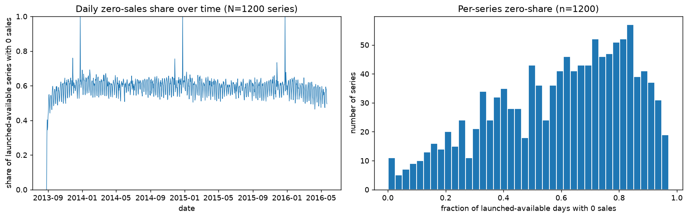
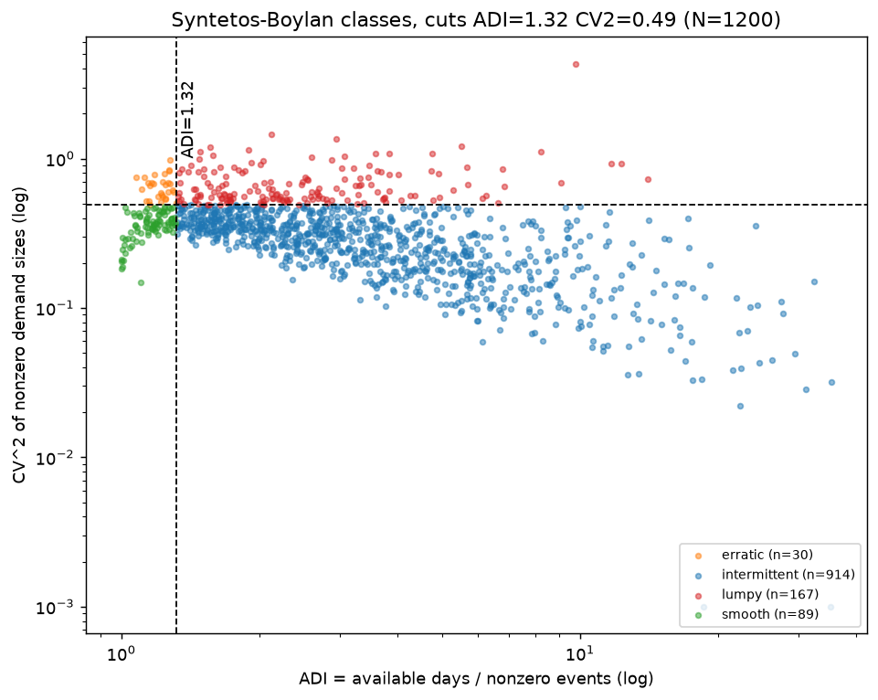
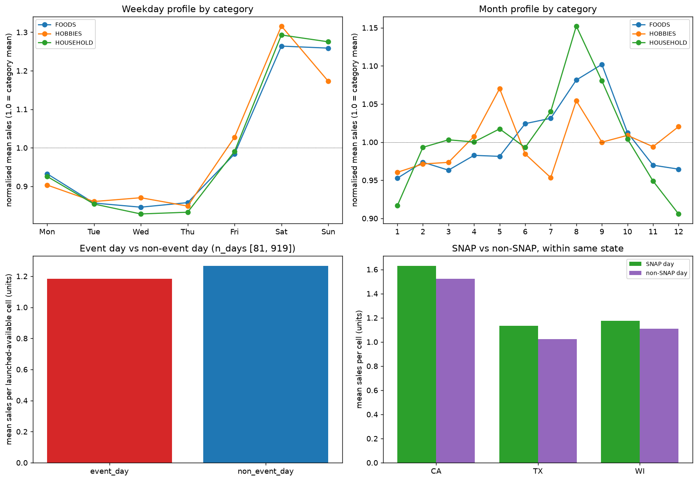
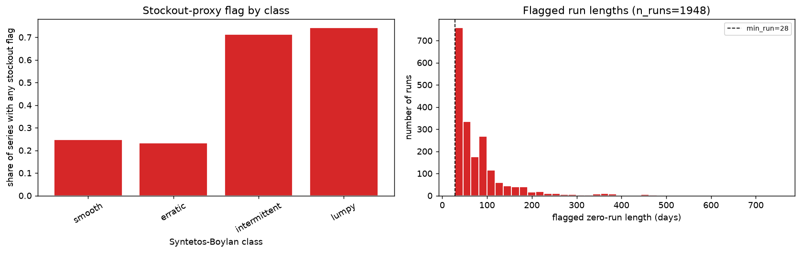
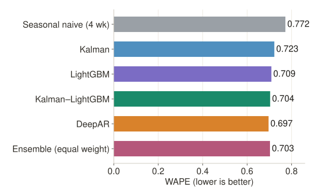
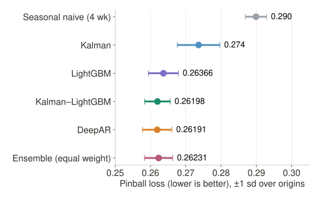
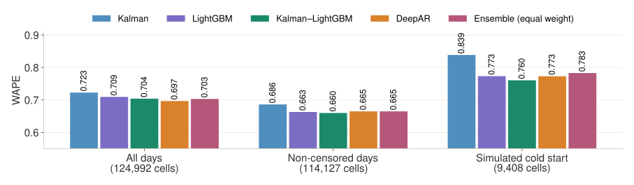

Under a single leak-safe protocol, how do a local state-space model, a tabular gradient-boosting model, their hybrid and a global deep model compare on accuracy, calibration and cost for sparse retail demand?
Frozen M5 subset · 3 stores · 1,000 days
4 rolling origins · 28-day horizon · 7 quantiles
Phase 1 ML evaluation. No tuning was run, and each model uses one seed.
The newsvendor order level is a demand quantile:
q* = Cu / (Cu + Co)
Cu = cost of a lost sale, Co = cost of holding a unit. If a lost sale costs 9× holding, q* = 0.9. We therefore score 7 quantiles, not only a mean.
A stockout records zero sales even when there was demand. M5 has no inventory records, so censoring can only be inferred with a heuristic rule.
Treating every zero as true demand teaches models to under-forecast.



For a series with ≥ 10 sales, a zero run of length L is flagged if L ≥ max(28, 3 · ADI).
Flagged days are masked in training and never imputed. The rule can misfire both ways: it flags genuine quiet periods, and it misses short or partial outages.

Per-series local level plus stochastic weekly seasonal, on √y. Noise ratios are picked by a per-series grid search over 16 pairs (not EM). Masked days skip the update step.
Four 7-day horizon buckets, each with one Poisson mean model and 7 quantile models: 32 boosters per origin, 200 trees each. No recursive feedback.
LightGBM plus 3 Kalman features: filtered level, one-step sd, and the h-step state mean. It uses classical and ML parts only, with no deep learning.
A shared 2-layer LSTM (64 units) with a negative binomial output and embeddings for item and hierarchy. The loss is masked on censored days. Quantiles come from 200 sampled paths.
The ⅓ average of the Kalman, LightGBM and DeepAR quantiles, computed after forecasting with no extra training. Reference baseline: the 4-week seasonal naive.
| Group | n | Read at |
|---|---|---|
| Target lags yt, yt−1, yt−2 | 3 | anchor t |
| Same-weekday lags (4) and their mean | 5 | ≤ t |
| Rolling mean, sd, nonzero rate, mask fraction over 7, 14, 28, 56, 112 days | 20 | window to t |
| Recency: days since sale, age, mean | 3 | anchor t |
| Calendar, events, SNAP | 19 | target day |
| Price features | 4 | target week |
| Static hierarchy, horizon h | 5 | – |
Scrambling all targets after the origin leaves the context and the forecasts of 6 model families unchanged (tolerance 10−5). This rules out target leakage on the test fixture, not every possible leak.
Target-week prices assume M5 posts prices in advance. The whole-window mean used to fill unposted weeks is not strictly causal. Those cells are never scored.
Test origins: 2016-01-31, 02-28, 03-27 and 04-24, 28 days apart, with H = 28 (the M5 horizon). One earlier validation origin, 2016-01-03, is reserved, but tuning was not run.
| All days, 1,116 established series | 124,992 |
| Non-censored: proxy-flagged cells removed | 114,127 |
| Simulated cold start: 84 series | 9,408 |
Cold start hides history from existing products: only the last 28 days stay visible and the item identity is unknown. It is not the same as a genuinely new launch.



DeepAR is best on WAPE (0.697). The hybrid is at 0.704 and the ensemble at 0.703.
The hybrid is best on both metrics: WAPE 0.660, pinball 0.269. DeepAR drops to third.
The hybrid has the lowest WAPE (0.760), with LightGBM and DeepAR tied at 0.773. LightGBM has the lowest cold-start pinball (0.274).
| Variant | WAPE | Pinball | Pinball, non-cens. |
|---|---|---|---|
| Kalman base (√, per-series grid) | 0.723 | 0.2736 | 0.2822 |
| Kalman, shared ratio | 0.718 | 0.2686 | 0.2772 |
| Kalman, no transform | 0.786 | 0.2792 | 0.2857 |
| Kalman, no masking | 0.701 | 0.2698 | 0.2907 |
| DeepAR base (NegBin, masked) | 0.697 | 0.2619 | 0.2723 |
| DeepAR, no loss masking | 0.677 | 0.2565 | 0.2760 |
| DeepAR, Gaussian likelihood | 0.792 | 0.2784 | 0.2853 |
Fixed ratio, log1p and 180-day window rows: paper Table IV. DeepAR base = main run.
Unmasked models learn the flagged zeros, so all-days scores improve but non-censored scores worsen. The reading assumes most flags are real stockouts.
A Gaussian instead of a negative binomial makes DeepAR's WAPE 12.1% worse and its pinball 5.9% worse.
DeepAR Cov90 = 0.965 (inclusive bounds; ties at zero inflate it). The discrete-aware check puts DeepAR in band at all 7 levels. Calibration is not solved.
Stockout flags come from a heuristic rule. They shape both training and the non-censored evaluation set.
One retailer, 3 stores, 1,200 series, 4 origins all in early 2016, a single seed (42).
Hyperparameters are hand-set. Tuning could reorder models whose scores are this close.
Hiding history from existing items is not the same as a real product launch.
Prices are assumed to be posted in advance, and the fill for weeks with no price is not strictly causal.
Croston, SBA, TSB, ETS and ARIMA were not run.
The remaining ablations, tuning on the validation origin, multiple seeds, feature importance, Croston/SBA/TSB baselines, and recalibrating DeepAR's quantiles.
The full list of 19 verified references is in the paper, with DOIs.